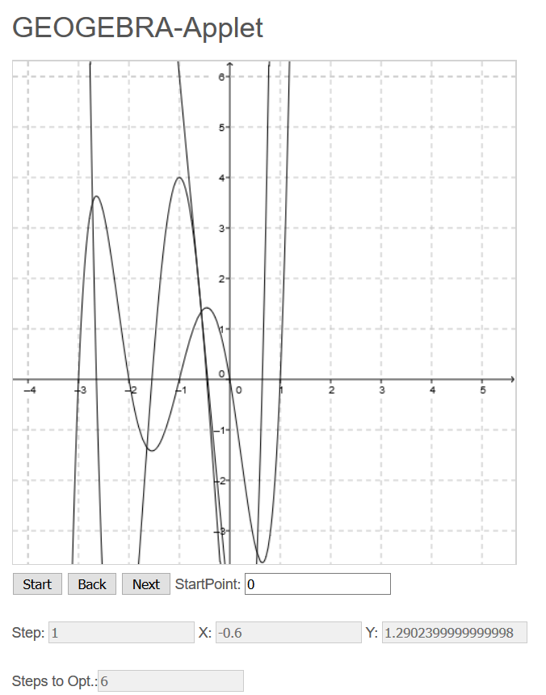

Source-Code Downloads
App für eine Beispielfunktion unter Anwendung des gedämpften Verfahrens
Applikation I des Newtonverfahrens
Applikation II des Newtonverfahrens
GeoGebra-Applet für das Newtonverfahrens
Introduction
In diesem Bereich stellen wir die
Softwaretools vor, welche wir für das Praktikum entwickelt haben.
Anwendung gedämpftes Newtonverfahren
Gegeben sei die Funktion f(x) = x^4/4-x²+2x und der Startpunkt x0=0. Bei Anwendung des Newtonverfahrens zur Bestimmung des Minimus der Funktion ergibt sich eine Endlosschleife zwischen null und eins. Für diesen Problemfall haben wir ein Tool entwickelt, welches das gedämpfte Newtonverfahren verwendet. Dazu wird das Verfahren um den Faktor Lamda erweitert. Der Code dafür sieht folgendermaßen aus:
In unserem Tool wird der Benutzer dazu aufgefordert Startparameter festzulegen oder den Default zu verwenden. Einen Screenshot dafür sieht man hier:
Daraus lässt sich schließen, dass die Gleichung unter Verwendung eines geeigneten Lamda und der Bedingung x0 = 0 mittles gedämpften Newtonverfahrens lösbar ist. Beim Versuch Lambda nahe an eins zu wählen, konnten wir keine Ergebnisse erhalten.
Applikationen zur Berechnung des Newtonverfahrens
Applikation I
In dem von uns entwickelten Tool ist es dem User möglich das Newtonverfahren anhand einiger vordefinierter Beispiele in Aktion zu sehen. Beginnend muss der User zu Bedienung des Programms die mitgeliefiert Config-Datei anpassen. Dies geschieht Zeilenweise. In der ersten Zeile, muss der Benutzer den Pfad und die Ausführungsparameter (-p -e sind Pflicht!) für das Program "gnuplot" definieren. In der zweiten Zeile wird der Outputfolder definiert.
Um das Programm zu verwenden, wählt der Benutzer eine Funktion aus, für welche das Newtonverfahren angewandt werden soll. Das Programm fordert den User auf den Startpunkt und die Genauigkeit festzulegen. Im Anschluss erfolgt die Ausgabe der entsprechenden Iterationsschritte (mit aktuellem Iterationspunkt und dem dazugehörigen Funktionswert). Zusätzlich wird für jeden Schritt ein Funktionsplott erstellt, aus welchem die Stammfunktion, die erste Ableitung und die Tangente der ersten Ableitung am jeweiligen Punkt ersichtlich sind. Der Benutzer erhält somit die Möglichkeit, das Newtonverfahren für seine gewählte Funktion grafisch, anschaulich und für jeden Iterationsschritt dargeboten zu bekommen. Des Weiteren wird für den Anwender in einer für ihm komfortablen Weise ein Log-File (LogFile.txt) erstellt, welches alle notwendigen Informationen zur Betrachtung der Grafiken beinhaltet.
Tool:
Beispiel Plott-Output (
f(x) = Stammfunktion; y(x) = Tangente von g(x); g(x) = f'(x)):
Beispiel Log-File:
Applikation II
Legende
1…… gibt die Reichweite der X-Achse an.
2…… gibt an wie genau die Funktion gezeichnet wird, je kleiner der Wert, desto genauer die Funktion.
3…… die Funktion die gezeichnet werden soll
4…… die erste Ableitung der Funktion wenn Minimum berechnet werden soll (wenn man Nullstelle suchen will gibt man die normale Funktion (f(x)) ein)
5…… die zweite Ableitung der Funktion wenn Minimum berechnet werden soll (wenn man Nullstelle suchen will gibt man die erste Ableitung der Funktion (f‘(x)) ein)
6…… Wie viele Berechnungen Maximal stattfinden sollen
7…… Der Startwert von dem aus die Berechnungen beginnen sollen.
8…… Zeigt an, an welchem Berechnungsschritt man sich gerade befindet, mit den Bottons kann man zwischen jeden Berechnungsschritt hin und herwechseln.
9…… Eine Zoomfunktion um hinein oder heraus zu zoomen.
Beschreibung
Dieses von uns entwickelte Tool stellt einfache 1-Dimensionale Funktionen dar und berechnet mithilfe des Newtonverfahrens ein Minimum oder eine Nullstelle aus und gibt das Ergebnis Schritt für Schritt visuell aus. Da der Hauptfokus des Tools auf die Grafische Darstellung liegt, werden nur einfache Funktionen unterstützt. Dass bedeutet, dass lediglich folgende Operanden unterstützt werden: *, :, +, - und ^. Als unbekannt muss der Buchstabe ‚x‘ genommen werden.
Man startet damit, eine gewünschte einfache Funktion einzutragen. Welche man sich durch klicken des Buttons zeichnen lassen kann. Ist die gewünschte Funktion gezeichnet, lasst es sich mit dem Zoom Button näher an die Funktion ran zoomen, bis eine passende Ansicht erreicht wurde. Will man sich nun das Minimum berechnen lassen, trägt man noch zusätzlich die erste sowie zweite Ableitung der Funktion ein. Nun kann man noch genauere Einstellungen vornehmen, wie die maximale Anzahl an Berechnungen und den Startwert, von dem aus die Berechnung starten soll. Sind alle Einstellungen getroffen klickt man auf den „suche Minimum“ Button und das Minimum wird berechnet. Dabei wird aber nur der erste Schritt im Graphen eingezeichnet (also das erste Ergebnis). Man kann sich nun nach der Reihe alle weiteren Ergebnisse ansehen. Daraus lässt es sich dann einfach ablesen, ab welchem Schritt das Minimum erreicht wurde.
Die Nullstellensuche folgt nach dem exakt gleichen Prinzip. Der einzige Unterschied ist, dass man statt der ersten Ableitung die Funktion f(x) nimmt und statt der zweiten Ableitung die erste Ableitung (f’(x)).
Applikation III

Außerdem haben wir ein GeoGebra-Applet entwickelt, um das Newtonverfahren für eine Beispielfunktion darzustellen. Hierbei gibt man einen Startpunkt an (Default: 0) und klickt auf den Button Start. Danach wird die Stammfunktion f(x) die Ableitung f'(x) und die Tangente g(x) von f'(x) gezeichnet. Der User erhält als Output die Anzahl der Schritte die durchgeführt werden mussten, bis das Optimum erreicht wurde. Nun kann der User mit den Buttons "Next" und "Back" die schrittweise Annäherung verfolgen. Dazu wird dem User auch die Nummer des aktuellen Schrittes sowie x- und y Wert ausgegeben.